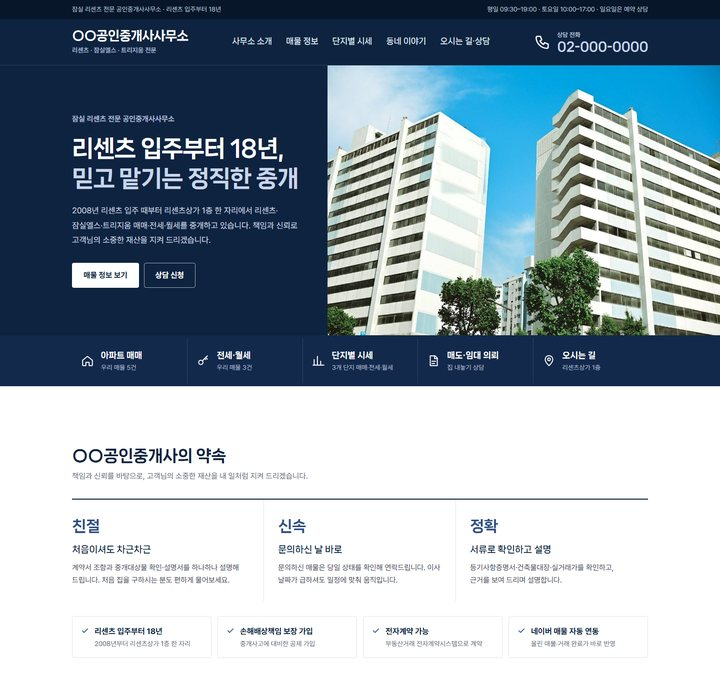
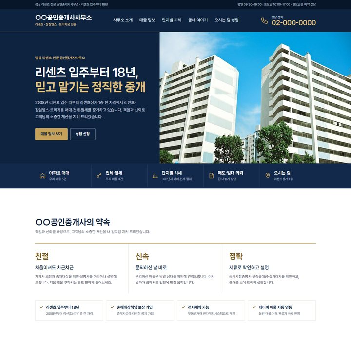

예시 중개사 홈페이지 · 정통 신뢰형(A)
금색 대신 쓸 강조색 4가지
같은 화면에 색만 바꿔 입혔습니다(위: 첫 화면, 아래: 약속 칸). 제목 둘째 줄·버튼·아이콘·밑줄이 함께 바뀌고, 금색과 짝을 이루던 베이지 바탕도 푸른 회색으로 바꿨습니다. ① 하늘색을 추천해 예시 홈페이지에 반영해 두었습니다.
① 하늘색추천 · 지금 반영됨
#8CC4FF#1F5FBF#0E2340
사진 속 하늘과 이어져 가장 자연스럽습니다. 은행·금융처럼 믿음직한 인상이고, 흰 바탕 글자는 진한 파랑으로 바꿔 잘 읽힙니다.

② 흰색·은색가장 차분함
#C9D6EA#FFFFFF#0E2340
색을 거의 쓰지 않아 가장 정통적입니다. 버튼은 흰색, 제목 둘째 줄은 은빛 파랑. 대신 조금 밋밋해 보일 수 있습니다.
③ 청록산뜻함
#5ED3DC#0B7680#0E2340
선명하고 산뜻합니다. 젊고 새로운 느낌이 강해서 ‘정통’과는 거리가 조금 있습니다.
④ 연보라눈에 띔
#AEB6FF#4049B8#0E2340
흔하지 않아 기억에 남습니다. 다만 부동산 중개에는 다소 가벼워 보일 수 있습니다.

지금까지 · 금색바꾸기 전
#E2C27D#7D5F22#0E2340
누르스름해 보이던 색입니다. 비교용으로 남겨 둡니다.
화면: 2026-10-20 빌드 · 가상의 중개소 · 예시 홈페이지 디자인 3종 + 관리자 화면